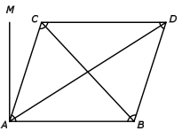
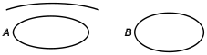

Беседа 2092 от 3877 · Беинса Дуно
Въздухът и мисълта – нови начини за хранене
Сряда, 5.30 часа сутринта
Размишление
Ще прочета четвърта глава от посланието към ефесяните. (Четоха се темите: Резюме на първата лекция от първата година на Общия клас – „Трите живота“.)
Човек трябва да се научи да гради. Който знае, той от един и същ материал може да изкара две противоположни форми. Който знае, той може да туря нещата на местото им. А който не знае, той трябва да се учи. Като пишете резюмета, мнозина от вас не тургат нещата на местото, но трябва да се учи.

Някое дете например, носи един образ, който е деформиран, но ти казваш: „Аз го рисувам, тъй както е в природата.“ – Ни най-малко не е според природата. За да нарисуваш един образ според природата, ти трябва да отделиш от него всичко онова, което е деформирано. Не мислете, че ако рисувате един човек, вие може да го рисувате такъв, какъвто е. Вие ще се излъжете от външните форми.
Всяко едно лице има геометрическа форма. Запример, ъгълът от 45 градуса показва какъв човек имате на среща си. Ъгълът B има приблизително 120 градуса. Значи, такова е неговото разположение. Сега представете си, че този човек, който отговаря на ъгъла A, възприема по-малко светлина, а другият, ъгълът B, е като отворен цвят, възприема повече светлина. Кое състояние е по-добро – при 45 градуса или при 120 градуса? – Много естествено, че в материалния свят, който има 45 хиляди лева е по-беден от онзи, който има 120 хиляди лева. Като казвам, че душата трябва да се отвори, разбирам, че формата в която човек живее, трябва да се разтвори. Вземете например, доброто в човека, може ли човек да бъде добър. Ако няма какво да дава, или ако той няма знания или ако няма каквато и да е дарба? Какво ще даде от себе си? Само кой може да дава? – Само богатият човек. Само изворът може да дава. Но какво може да даде едно малко шише, което съдържа едно кило вода? След като се излее шишето, той казва: „Аз се изпразних.“ Какво ще ми разправя, че той се е изпразнил, когато той е шише. Изворът никога не се изпразва. Когато във вас се сменя едно състояние с друго, вие казвате: „Любов ми трябва!“ След 4–5 месеца вие пак се изпразвате. Това е само за изяснение. И вие мислите, че природата се е изменила към вас, че Бог се е изменил. Не, вашата форма е толкова малка, че вие не разбирате положението в което се намирате. Вие сте далеч от извора, а не близо. Какво трябва да се прави тогава? – Ще измените формата, ще измените ъгъла на вашите познания.
Казвам, живота, в който ние се движиме, трябва да се разгледа от гледището на геометрията. Всяка геометрическа форма, подразбира един разумен свят. Следователно, ако се движите по една правилна форма, както тази геометрическа форма, подразбира, че вие сте в един разумен свят. Геометрическите форми са образувани от разумни същества. Геометрията представя най-красивия език на същества, които са завършили своето развитие. И всяко изменение на един ъгъл на един или повече градуси, например 45,50,60,70 градуса, всеки градус си има своите качества, той си има и своите линии. Успоредните линии, показват посоката на твоите сили, които излизат от душата ти.
Например, ти казваш: „Аз обичам един човек.“ можете ли да кажете, защо го обичате? Обичаш гроздето. – Защо? – Защото ти дава нещо. Обичаш светлината. – Защо? – Защото ти дава нещо. Обичаш водата. – Защо? – Защото ти дава нещо. Можеш ли да обичаш някого, който нищо не ти дава? Ти казваш, че обичаш всеки човек. Ти можеш да обичаш всекиго, който те обича, но да казваш, че обичаш всички, без да те обичат, това е качество на Бога. Няма същество в света, което може да обича и тези, които не го обичат! Това е качество на Бога! Когато казвате, че обичате всички хора, без те да ви обичат, няма да се минат половин или един час и теорията ви ще се опровергае. Верно е, че ти можеш да обичаш този, който не те обича, т.е. ти не можеш да обичаш човек, който не ти дава два пъти повече, отколкото ти му даваш. А човек, който те обича два пъти отколкото ти си му дал, любовта ти се намалява съобразно с това.
Според мене всяка една геометрическа форма е възможност за един живот, за разумен живот. Един триъгълник е една възможност, един квадрат, един правоъгълник или един ромб, показват една възможност, едно състояние. В квадрата имате еднакви страни и еднакви ъгли. В ромба имате две по две срещуположните страни и ъгли, равни. И тогава, онези, които се обичат, винаги се намират на страната B. А онези, които са стеснени, се намират в ъгъла A. В тях любовта е пресметната. Аз тъй определям, като цигуларя. Да̀ли на един цигулар да свири за пет лева. Той ще свири пет минути. Казват: „Свири повече!“ – „Не може. За пет лева, пет минути се свири. Колкото даваш, толкова ще свиря, на една минута по един лев!“ Като свири 60 минути – 60 лева, 120 минути – 120 лева, 400 минути – 400 лева! А сега искате някой да ви свири цял час за пет лева. Срамота е това!
Сега какво се крие в идеята, че всичко даром трябва да се дава? Което даром ти е дадено, даром ще дадеш. Което даром не ти е дадено, няма даром да го дадеш. Туй, каквото от Бога ти е дадено, каквото на тебе се пада, задръж го, а другото раздай! Когато ние говорим за любовта, тя е даром дадена. Следователно, не считай, че любовта е излязла от тебе. Не, ти си проводник на Божията любов, Бог ти е дал тази любов. И не казвай, че много обичаш този човек. Колко го обичаш? – Ако този човек седи при тебе 3,4 години да го храниш, ще видим колко е любовта ти. Ще кажеш: „Да се махне този човек! Само за него трябва да живея и работя!“
При сегашния начин на живеене, след като цялото човечество е приело всички блага, които Бог му е дал, и учени и богати, всички са недоволни. Защо са недоволни? Религиозните хора са недоволни и богати и учени и философи, всички са недоволни. Защо? – Че тяхната философия не била оценена. Че колко пари струва тази философия? Или, че поезията му не била оценена. Че колко струва тази поезия? Или, че музиката му не била оценена. Че колко струва твоята музика? Казва: „Аз му свирих.“ – Свирил си. Ние продаваме това, което не е наше. Нито животът е наш, нито науката е наша, всичко е чуждо и с чуждото сме направили цяла една система. Някой казва: „Работил съм. Времето си изгубих!“ – Времето си изгубил! Ако при мене дойде някой човек, аз ще му свиря само при известни условия. Ще му кажа: „Ухото ти как е? Имаш ли ухо? После, като ти свиря, можеш ли да играеш, можеш ли да клякаш? Можеш ли да подскачаш? Можеш ли да маршируваш? Ако можеш всичко това, тогава ще ти свиря много хубаво. Но ако не можеш да слушаш, както трябва, ако не можеш да играеш, не можеш да клякаш и да ставаш, на такива хора, аз не свиря.“ Музиката е за здрави хора, тя не е за глухи. – „Ама аз искам да чуя музика!“ – Колкото и да искаш да чуеш, за тебе само едната струна ще тегля и ще кажа: „Дай един лев!“ – „Ама искам другата струна!“ – „Дай още един лев!“ – „Ама и 4-тях струни!“ – „Дай още един лев!“ Четири лева за четири струни и то само да ги чуеш.
Ние се поставяме в една особена фаза в живота. Ние не знаем през какви пластове минава живота. Водата се определя от пластовете през които минава и от сплотеността на пластовете, зависи каква ще бъде водата. Всякога пластовете имат известни пречупвания. Значи, ония пластове, през които водата минава, да се изчиства, за да се изчисти, те са претърпели известно пречупвание. Когато водата минава през такива пластове, които наполовина са претърпели пречупвание, следователно, те на половина събират слънчевата енергия. Следователно, ония, които изучават водното изкуство и които са по-вещи, познават на кои места може да има хубава вода. Сега мене не ме интересува материалната страна на въпроса, но виждам, че зад пречупването на всеки един пласт, седят разумни същества, които са пречупили, построили тези пластове. Преди хиляди години даже те са знаели, че еди кога си ще дойдат на тези места, разумни хора да живеят. И казва: „На тези разумни хора ще дадем по-хубава вода!“ А като знаят, че на някои места ще дойдат хора, които няма да изпълнят Волята Божия, те са пречупили пластовете по особен начин. На тия хора се дава повече варовита вода, която да няма такава магнетическа сила. Значи, тия разумни същества преди хиляди години са знаели на какви места, какви хора ще се населят.
За да расте в човека известна идея, той трябва да има съответна почва. За да дойде у човека духовният живот, той трябва да претърпи известно пречупване на пластовете. Или условията, при които може да живее този организъм, трябва да има такова съответно пречупване. Ако не вярвате, наблюдавайте, да видите де се крие онова, което вие не харесвате в хора, които не обичате. Казвате: „Аз не харесвам окото на този човек.“ – Какво не харесвате? Според вас, кое око 
Та казвам, добрият живот на човека седи в това, което му е дадено. А какво е дадено на човека? – Неговото тело. Сега ние говорим за душа, говорим аз дух, но това са неща невидими. Най-известно е сърдцето, понеже казваш: „Сърдце имам!“ Чувствуваш пулса му. Ти само го чувствуваш, но и сърдцето е почти невидимо в човека. Че ако между сърдцето и чувствата има известни съотношения, това всеки трябва да провери. И наистина, ако ти се уплашиш, веднага твоят пулс почва бързо да бие. Ако дойде една добра вест, че си спечелил нещо и се успокоиш, ще пипнеш с ръката си пулса и ще видиш, че той е равномерен, ритмичен. Щом пулсът е ритмичен, туй се предава по цялото лице. Значи, има свиване и разпущане на мускулите. Това е вътрешна наука. Най-първо ние трябва да изучаваме начините, по които Бог е построил човека.
Например, вие искате да си въздействувате. Как искаш да си въздействуваш, с думи ли, с известни движения ли? Запример, при най-лошото състояние, аз мога да го трансформирам в 5–10 минути. (Учителят прави движения с ръцете: от средата на гърдите, пръстите събрани, бавно ги разтваря настрани в хоризонтално положение. Пръстите се разтварят във вид на цвят, пак се събират на куп и се разтварят. Ръцете се прибират в събрани пръсти пред гърдите. След това ръцете напред и малко нагоре, пръстите събрани и навън се разтварят като цвят. След това ръцете пред гърдите и надолу.) Тези движения ги има и в светските хора. Така децата предават целувка. Това е една магия. От пръстите им излиза нещо. Казвам: давам и взимам. Някой казва: „Аз давам нещо.“ – Щом даваш и ще вземеш. До сега вие сте разбирали само едната стана, какво хората ви дават. Без да знаете, че след време и те ще вземат нещо. Щом даваш и ще вземеш. Те ще го вземат даже и с лихва.
В какво седи еднообразието? Защо законът не може да изправи света? Туй състояние на ъгълът A е обикновения закон, който не може да изправи света. Този B, аз наричам ъгъл на Любовта, по какво се различават сега? Ето аз как различавам нещата. В сегашния закон, законът на физическия свят, правото е само на страната на силния, на страната на онзи, който има да взема, на кредитора. Следователно, законът не е на страната на онзи, който има да дава. Ще те затворят, ще те глобят и силният казва на слабия: „Ще изпълниш! Ако не изпълниш ще останеш в затвора.“ При тези правила няма никакъв ред, никакво право, никаква свобода. Това право е един механически закон. Законът на любовта се отличава с друго нещо. Той еднакво се застъпва и за праведните и на онзи, който има да взема и на онзи, който има да дава. На онзи, който има да взема, Любовта казва: „Колко има да вземаш?“ – „Имам да вземам 10 000 лева.“ – „Но първоначално 10 000 лева ли бяха?“ – „Не, първоначално бяха 1000 лева, но той ги остави 10 години и те се намножиха.“ – „Ти не можеш ли да отстъпиш нещо? Не можеш ли да вземеш 1000 лева, а 9-тях хиляди лева, които си турил отпосле от себе си, да оставиш настрана? Ти си дал само 1000 лева, а другите 9 хиляди лева са твоя измислица.“ После Любовта се обръща към онзи, който има да дава и го пита: „Ти, хиляда лева можеш ли да платиш?“ – „Хиляда лева мога да платя, но 10 хиляди не мога.“ След това тя вика двамата и казва: „Хайде, хванете се за ръката!“ Казвам, по този начин в света може да има равенство. И единият отстъпва и другият отстъпва.
Някой казва: „Аз не мога да отстъпя.“ Ти се намираш в ъгъла A. За да отстъпиш, ти трябва да измениш своето положение и по линията A, да дойдеш в другия ъгъл B, да разшириш своята светлина, да видиш какви ще бъдат последствията, като изпълниш Волята Божия. Защото ти, като банкер си изпратен от Бога в света, да се примириш с хората, да създадеш приятелство с тях. И ако ти не можеш да използуваш този случай, който Бог ти е дал, то втория случай ще се намерите точно в противоположния полюс. И ако вие мислите, че като ученици, не можете да използувате положението, в което се намирате, то втори път, като дойдете, ще бъдете в по-мъчно положение, ще влезнете в тесния ъгъл A. И положението ви ще бъде два пъти по-лошо, от колкото сега. Ако пък използувате сегашното си положение, бъдещето ви положение ще бъде два пъти по-добро от сега.
Казвам, добри влияния има в природата! Онези, които не разбират законите на природата, често се движат по диагоналите на природата. (Виж първия чертеж.) Някой път, диагоналното движение е износно за разумния човек. За онези, които не разбират законите на природата, движението по диагонали ще ги постави в много трудно положение. Обикновеният закон винаги води по периферията или по диагоналите. А законът на Любовта води и по страните и по диагоналите едновременно. Ти трябва да знаеш от де, в дадения случай, трябва да минеш: по страните или по диагоналите. Диагоналът, за тебе, е една възможност да разрешиш най-мъчния въпрос. Това е в живата геометрия. А в обикновената геометрия има доста мъчни задачи. Когато се строи една къща на известно пространство, архитектът геометрик си прави своите планове, чертае своите ъгли и той има възможност. Ако не знае тези закони, той ще направи едно здание, което не е хигиенично за живеене.
По отношение на живата геометрия всеки един от вас е архитект на своята къща. За вас други са градили, но въпреки това, всеки от вас трябва да работи. Казвате например, че всеки човек трябва да съгради своя характер. Ако той не може да съгради телото си, не би могъл да съгради и своя характер. Ако той не може да събере на едно место две мисли, той не може да мисли. И ако, едновременно, той не може да примири в себе си две противоположни чувства, за да намери закона, по който може да ги примири, какъв човек си ти? Ти можеш да примириш каквото и да е. Някой човек те мрази, занеси му 45 хиляди лева, занеси му подаръци и той изведнъж ще те посрещне добре. Той веднага ще каже: „Аз измених вече положението си.“ Дай на човека онова, от което той се нуждае и ти ще се примириш с него. Вземи му онова, от което той има нужда и ти ще си създадеш един неприятел. Така е в обикновения живот.
Та разумните същества в света, по някой път, идат да разрешат неразрешените задачи. Когато някои хора не могат да се примирят, тогава изпратят някое разумно същество между тях, то се облича в плът и кръв и по този начин ги примиряват. Сега вие, защо сте дошле в света? – Някои от вас сте дошли само да примирите някого. Тази е вашата задача. Да намерите тия хора и да ги примирите. Тъй щото, в един живот ти си дошел само за това: да примириш две свои чувства или две желания в себе си. Казваш: „Аз не мога да обичам хората.“ – Най-първо, ще се научиш да обичаш тези, които те обичат. Най-първо ще се научиш да обичаш тези, които те обичат два пъти повече, отколкото ти ги обичаш. Ако не можеш да намериш тези хора, които те обичат два пъти повече от тебе, ти ще бъдеш нещастен човек. Тази е задачата – да намериш всички тези хора, които ви обичат два пъти повече от вас. Дето и да са те в света, трябва да се свържете с тях. Казвате: „Господ ще ни свърже.“ Това е едно механическо разрешение на въпроса. Господ те подбужда отвътре да отидеш в Америка. Ти казваш: „Ама много ще се изхарча!“ – „Не, ще спечелиш!“ – „Ами в такива оскъдни времена ходи ли се? Много ще изгубя.“ И започнеш да философствуваш: „Ами ако параходът потъне някъде?“ – Ако останеш тук, можеш да потънеш два пъти повече.
Казвам, как може да се разбере живота сега? Той не е построен на една здрава основа, постоянно трябва да се гради. Вие сега се спъвате, като казвате: „Аз зная!“ – Много добре, туй знание, едно време имаше смисъл, но то днес не е достатъчно. Днес още има да се гради. Зданието, върху което живеете, още не е свършено. – „Ама аз мисля, че имам характер.“ – Добре, но условията, при които сега живееш и за тия в следващата фаза, се изисква два пъти по-силен характер, отколкото сегашния. Защо са силните характери? – Много ще даваш и много пъти ще вземаш. Ти не можеш да опиташ живота, ако не вземеш много. Да обичаш един човек е хубаво, но много да те обичат е по-хубаво. Според вас, кое е по-хубаво? Вие мислите, че е по-хубаво един да те обича. И до сега хората са търсили все един да ги обича. Кой от вас не е търсил един да го обича? Върху тази идея се съгражда дома. Намират се двама и се обичат. И върху тази философия се съгражда дома. Казвате: „Другояче не може да бъде!“ После пък се народят деца. Тогава, какъв смисъл имат думите на Христа, Който казва: „Които се сподобят с бъдещия век, те нито се женят, нито за мъж отиват, нито пък едного обичат.“ Как ще разберете това? При сегашните условия, това е верно. И аз тълкувам закона: ти търсиш едного, който те обича два пъти повече и за него ще се ожениш. Между двама души, които ще съградят един дом, единият трябва да обича два пъти повече. И тогава в дома горе долу може да има обич. Единият ще дава повече, а другият ще взема два пъти повече и ще дава два пъти по-малко. Затова казват: „Мъжът трябва да бъде отворена ръка, а жената трябва да бъде стисната ръка.“
Казвам, аз трябва да начертая тази фигура и да помислите малко върху нея. Не се старайте да я разрешите. Задачите не трябва да се разрешават в техните крайни резултати. Някой иска да знае какъв ще бъде краят на неговия живот. Не търси края на своя живот! Никой не знае какъв ще бъде краят. Какво разбираме ние под думата – край на живота? Краят на живота, на онзи, който ще страда, не може да се намери. Същият закон – онзи, който е страдал, за в бъдеще ще бъде щастлив. Щастливият, който мисли, че ще бъде още по-щастлив, той ще влезе в положението на нещастния. Защо? – Защото е седял там, дето има голямо течение. Ти не трябва да застанеш на едно место, понеже ти си в движение в света.
Не се спирай върху някои установени идеи. Казвате: „Той трябва да бъде установен човек!“ Знаете ли какво нещо са установените идеи? Хубаво е човек да бъде установен, но той трябва да бъде установен винаги, при каквото и положение да се намира – при студено или топло време, при богатство или при сиромашия, при здраве или при болест. В човека трябва да има едно състояние, което никога да се не мени. Туй значи да има постоянен характер. А другояче, установен характер няма смисъл. Такъв установен характер е една лоша черта.
Ще ви приведа следния пример: Едно дете ходило, заедно с баща си, на молитвено събрание в една баптистка църква, дето хората се радвали, целували, прегръщали помежду си, пеели. На детето обърнало вниманието, че всички хора пеят, а бащата не пеел. То казало: „Татко, ти защо не пееш, когато всички хора пеят?“ – „Аз съм от утвърдените, не искам вече да пея.“ Чуди се детето, не може да разбере състоянието на бащата. Един ден бащата впряга един малък кабриолет, взема детето си и с него отива на разходка. По едно време, конят дохожда до едно место, спира се и не иска повече да върви. Бащата бие коня, но той не се мърда, Детето казва: „Татко, коня се утвърди!“ Ние мислим, че като дойдем до едно състояние, да не се движим, че сме се утвърдили. Какво ще се утвърди една счупена стомна? Че всякога ще я намериш празна. Доколкото съм изследвал всичките утвърдени хора в света, когато съм ги потърсил, все са били празни стомни. А онези, неутвърдените хора, когато ги потърсиш, всякога ще има малко вода да се бълника.
Разправяше ми един познат, една своя опитност: „Не зная вече какво да мисля за религиозните хора. Отивам при един православен, той ме поглежда и ми казва: Ти знаеш ли коя е причината за твоята сиромашия? Ти не си вършил Волята Божия. Ти трябва да се покаеш. Отивам при един евангелист, той ми чете стихове и ми казва, че трябва да се моля на Господа и той ще ми даде каквото искам. Казвам си: прави са тия хора, но защо не ми помогнат по някакъв начин. След това срещам един човек от света, който никакъв не е – нито православен, нито евангелист и ме пита: Защо си се замислил? – Не зная, да ти разправям ли? – Разправи ми твоята работа! – Хубаво, имам нужда от пари, ходих при единия вярващ, при втория, при третия, всички ми казват неща, които не мога да направя. – Че какво ти разправят? – Казват ми да съм вярвал в Бога. – Тя е дълга и широка работа! Колко ти са нужни? Ето на, свърши си работата и после, като забогатееш, тогава вярвай в Бога, а сега, като си загазил .“ Казвам, този човек е на правата страна. Той е пълен израз на Любовта! Религиозните хора пък са религиозни по външен път. Той казва: „Едно време и аз бях като тебе и аз ходих по тези работи, мъчих се, мъчих се и най-после казвам: докато имаш, давай! А като нямаш, няма какво да даваш, поне Господ няма какво да те съди.“ Такъв е неговия закон. Той казва: „Ако имам и не давам, Господ ще ме съди.“ Затова е разрешил въпроса: „Докато имам, ще давам. А като нямам, нищо няма да давам.“
Сега вие не вземайте, че този въпрос се отнася лично до вас, до вашия характер. Има една красива страна в живота, когато се говори безлично, да не засягаш никого. Защото, не се интересувайте от злото на хората, кой колко е лош. Оставете, той сам да си знае това. Нито пък се интересувайте от това, колко е богат, колко е добър. В дадения случай, интересувайте се от това, кое той не може да направи. Казвате: „Той не е такъв, какъвто трябва да бъде!“ – Това е друг въпрос. Аз намирам една круша и казвам: „Не е хубава тази круша.“ – „Такава съм аз!“ – „Ама трябваше да намериш някой да те ашладиса.“ – „Такава съм сега, обикновена круша.“ Та тази философия вие трябва да приложите и върху себе си. За всеки даден случай, бъдете благодарни от това, което имате или което знаете. – „Ама аз трябваше да зная повече!“ – Какво щеше да направиш, ако знаеше нещо повече?
Някой казва: „Учителю, ако аз бих знаел толкова, колкото тебе, чудеса щях да направя!“ А той не знае, че ако би направил чудеса, щеше повече да плаща. Ако можеше да прави чудеса, той щеше да плаща и да изпадне в положението на онзи американски проповедник, който отишел да прекара на курорт на едно место, както нашата Чам-курия. Той намерил там една църква затворена и решил да направи жест и да проповядва на хората без пари. Отворили църквата и той започнал да проповядва. Събирали се маса хора. Американците много обичат да им се признае направеното добро. Като тръгнал да си заминава, качил се на парахода, поглежда, дано дойдат някои да му благодарят, да кажат: „Ние сме много благодарни, ти беше много добър към нас!“ Той искал да получи една резолюция от онези, които са го слушали. По едно време гледа, че тича клисарят и носи една книжка. Той се зарадвал, помислил, че му изказват благодарността писмено. Но остава изненадан, когато вижда, че му представят сметка за осветлението и за наема на църквата. Та казвам, всички вие ще платите за осветлението на чудесата, а отгоре на това и за наема. Та когато някой дойде при мене и иска да му направя едно чудо, аз го правя без наем. Няма да го направя в зданието вътре. И после, когато говоря, не ми трябват и лампи, понеже зная, че и за тях трябва да платя. Като влезна вътре, казвам: „Може и без лампи“. Веднъж ме извикаха на едно место да говоря, питах ги: „Лампи имате ли?“ – „Може ли без лампи?“ – „Аз при лампи не говоря.“ – „Как да не говориш при лампи?“ Не е лошо да направиш едно чудо. Не е лошо да услужиш на хората. Но има една вътрешна връзка – ти трябва да разполагаш с невидимия свят, трябва да разполагаш с известни сили. Ти ще разправяш на този човек за вътрешен живот, за здравето му, а при това, този човек, този живот няма да го използува. С това ти ще увеличиш неговото нещастие.
Та сега, другата страна, ще оставиш умния, който е направил едно чудо, той сам да си плати. Той трябва да е изпил чашата на страданието до дъно. И тогава, от невидимия свят ще кажат: „На този човек може да му се каже, защото той може вече да използува това.“ А тъй безразборно да лекуваш, не може! Аз гледам, в Америка, много лекари има, които лекуват без пари. Но даже и онези, които лекуват по магнетически начин, трябва да платят. И наистина, онези, които са лекували по този начин, след 5–6 години до 10 години най-много са крайно изтощени. Те почват да съжаляват, че безразборно са хабили своите сили.
Та казвам, трябва да се създаде едно разумно разбиране за живота. Всички вие се намирате в разни степени, в разни положения. Някои от вас имате големи капитали, но не знаете къде да ги вложите, какво да правите с тях. Някой път, за да поощриш някого, казвате: „Направи добро!“ Но има друга една страна на живота. Ти не можеш да живееш добре, не можеш да правиш добро, ако не можеш да живееш за Бога! Ако ти живееш само в своята къща, без да излизаш навън на чист въздух, непременно ще изгубиш. Когато казваме, че трябва да живееме за Бога, разбирам, че трябва да живеем в цялото. Не на полето, дето има нечист въздух, но на планината, дето има чист въздух! Всеки един от вас, трябва да се качи на високо место!
Погрешката на всинца ви седи в следующето: от сутрин до вечер, вие се занимавате само с хората. Този каква погрешка направил, онзи каква погрешка направил. И това е хубаво, но трябва да платиш. Ти живееш в нечиста къща. После, във втора, трета, пак нечисти. И като поживееш в тия нечисти къщи, ще излезнеш на един планински връх, ще подишаш чист въздух и после пак ще влезнеш в някоя къща. Тъй разбирам аз Божественото! Като дойде някой при тебе, ти ще му кажеш: „Почакай малко!“ Такъв пример ние имаме със знаменития проповедник Спържен. Той бил проповедник в една от Баптистките църкви. Дошъл при него един млад проповедник и казал на слугата на Спържена: „Кажи на твоя господар, че един брат в Христа го чака.“ Спържен му предава картичката си на която пише: „Почакайте малко, имам работа с Господаря ви.“ Той е слугата, а Христос е Господаря. Като дойде някой при вас, казва: „Много бързам!“ Ще му кажете: „Имам работа с Господаря ви!“ Какво бързаш, накъде ще отиваш?
Затова и аз ви казвам, не се занимавайте с погрешките на хората! Те спъват човека! Мисли за добрите хора, за Този, Който е създал света, за онези разумни души, които са завършили своето развитие, мисли за тях! Следователно, за добрите хора мисли, а за лошите не мисли, нито ги критикувай, ако искаш да бъдеш свободен. Само така можеш да бъдеш свободен. Щом мислиш за тях, щом ги критикуваш, ти се свързваш с тях. Затова казва писанието: „Не се свързвайте със света!“ Щом говориш за тези хора, ти вече си свързан с тях. Виждаш един министър или някой човек, който заема един голям чин, ти веднага казваш: „Да имам такава голяма заплата!“ – Остави неговата заплата. Тя не е за тебе. Той си заслужава тази заплата. В дадения случай, ти живей без заплата, за да разбереш. Защото, ако ти имаш неговото състояние, ти не можеш да разбереш Божествения закон, който, в дадения случай, иска да те просвети. Защото богатият човек има много неща около себе си. И ти, който живееш без пет пари, ти си беден, но затова си свободен. Ти можеш да нямаш за ядене, може да си гладен, но имаш чисто небе пред тебе. Не разбирам гладуване, ти ще се храниш по-малко, но ще се храниш с чист въздух и ще се лекуваш с него. В какво се заключава лекуването? Някой казва: „Гладуване има.“ Гладуването седи в това, да дадеш на стомаха си по-малко храна. Ще се храниш с въздух! Даже и най-напредналите същества ще ограничат стомаха си, да не яде и дробовете си. Но ще мислят и това е храна. Най хубава храна седи в най-хубавите мисли. При тия три начина: първият начин, малко ще ядеш; вторият начин е дълбокото дишане, а после, третият начин е онази здравата, правата мисъл, тя е здравословна.
Вие още не знаете какво е мислене. Като речеш да мислиш право, веднага всичките дяволи ще дойдат около тебе, Иван, Драган, Стоян, Петко, Учителят ти, професорът ти, някой кон, някое магаре . Като видиш този закон, веднага да знаеш да манипулираш, да туриш на този кон, ако мислиш за кон, една Божествена форма, каквато първоначално Бог му е създал. Като видиш един лош човек, ти веднага го ретушираш, да видиш как Бог го е създал първоначално и защо в последствие той е станал такъв. Та, никога не трябва да виждаш злото, защото Който Бог е създал света, Той ще изправи хората. Не предстои на нас да изправим света, хората, но на Онзи, Който го е създал. В дадения смисъл, ние не носим отговорността за света. Дали синът ще се оправи или не, то не е наша работа. Който е създал света, Той си има грижата за него. Казвате: „Какво ще стане със света, много грешни хора има?“ Не се безпокойте за света, този свят ще се оправи! Защото в този свят, който виждаме, много грешни хора има, но има и много праведни хора, които живеят и поддържат света. Ние гледаме снизходително към тях.
Та сега, опасността във всинца ви е в това, че всички имате големи фирми, но като погледна на фирмата казвам: Нищо не мога да взема от тук! Аз ви съжалявам за това. Вие имате големи фирми, но не разполагате с капитали. Тук има един шоп, който на всеки 4–5 седмици ще дойде и ще ми разправя за жена си, за децата си, че на война е бил, че го ранили и казва: „Няма ли да ми помогнеш нещо?“ Той все от пари се нуждае. Как е дошел при мене не зная, но като си отива, все не може да си иде пеш, не може да върви пеш. Казва: „Не можеш ли да ми помогнеш да се кача на трена?“ Като го гледам, казвам си на себе си: „Ако аз съм на негово место, как ще разреша този въпрос? Какво трябва да направя? Ако нищо не му дам, пеш ще си отиде.“
Казвам, на всинца ви липсват условия. Мнозина от вас трябва да се молите да преминете мъглите. Тази мъгла, която имате да се поразсее. Защото тя ви заблуждава. Защото как схващате? Казвате: „Не разбирам нищо!“ – Туй е мъгла. – „Ама така разбирам.“ – Мъгла е това. – „Ама другояче не мога да постъпя.“ – Мъгла е това. – „Ама тъй трябваше да постъпя.“ – Мъгла е това. В дадения случай, може да се постъпи само по един начин. „Аз постъпих тъй, понеже мислех, че той ще ме разбере, но виждам, че идеята ми е била крива. Той не иска да ме разбере.“ Не, този човек е носил друго някое благо. „Аз мислех по един начин, но се намерих в едно заблуждение.“
Казвам, всеки един от вас, трябва да пречисти своята мисъл, най-първо. Бог не обича да си занимава с недъзите на хората. Какво трябва аз да разправям на Бога? Преди всичко Той не се нуждае от моите сведения – да му разправям кой е добър и кой е лош. Като отида при Бога всеки ден трябва да му благодаря за онези условия, при които живея. Това е правата мисъл. А с противоречията нека светът да се занимава.
Сега, оставете дребните неща, спрете се върху големия сом. Той е фигурата. Това са материалистически състояния на човека. A и C, AB и D са духовните състояния (виж първи чертеж), които постоянно се сменят, вие не можете да имате един духовен живот, докато не сте живели един материалистически живот. Всякога духовният живот се сменя с материалистическия. Не мислете, че материализмът е нещо лошо. В материализма има сила, материя, която ако знаете да превърнете, ще се ползувате от нея. Духовният живот е приготовление за материалния. А материалният свят е един Божествен склад, от който трябва да се черпи. И най-напредналите същества слизат в материята, да вземат малко запас. Тъй щото материалният свят е запас от енергия. Ако мислим, че материята е нещо, което може да ни повреди, ние се лъжем. Онова, което може да ни напакости е друго нещо. На онези, които разбират, материалния свят е Божествено благо, а за онези, които не разбират, той е едно нещастие. Ти от материя се нуждаеш толкова, колкото може да носиш. Не тургай повече, отколкото ти трябва! Яж умерено, дишай умерено, работи умерено, спи умерено. Умереността е първото правило в живота!
Отче наш
Аз, ако бих писал резюме, бих писал: Трите красиви живота – материалният красив живот, духовният красив живот и Божественият красив живот. Защото и трите са красиви, когато ги разбереш. А когато ги не разбереш, няма нищо по-лошо от тях!
13 лекция на Общия окултен клас
20 декемврий 1933 г.
София, Изгрев